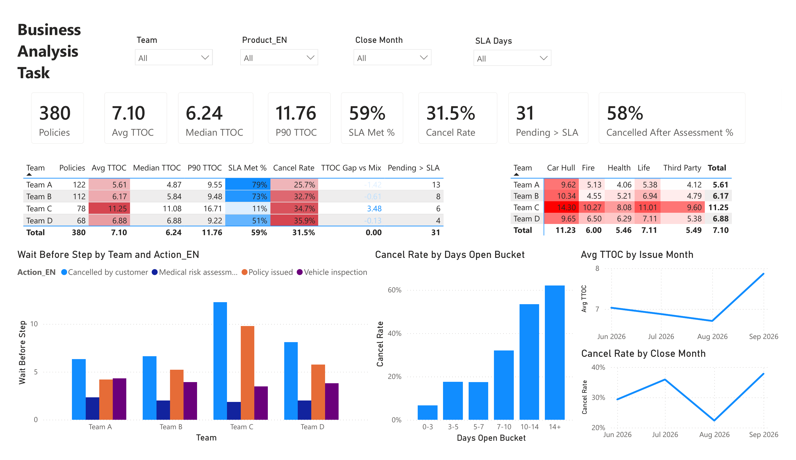

Business analysis · Process and data
Why insurance policies were slow, and why customers walked away
An insurer's policy issuance took 7.1 days on average and 31.5% of closed applications were cancelled. Working from 380 applications and their process log, I cleaned the data, defined the KPIs, found where the time went, and proposed fixes ranked by impact.
- Role
- Business analyst
- Data
- 380 policies, 900+ process events
- Tools
- Python, SQL, Excel, Power BI
- Type
- Business analyst assignment

1. Clean the data first
The raw data would have given wrong answers. Team names were written ten different ways, ten issued policies were marked as cancelled, some cancellations were dated before the application, and day and month were swapped in several dates. I used the process log as the source of truth, fixed each issue with a stated rule, left unknowable values empty instead of guessing, and checked eight consistency rules at the end. All eight passed.
2. Pick KPIs that point at the cause
- Time to issue as mean, median and 90th percentile, because a few slow cases pull the mean up and the 90th percentile shows the worst customer experience.
- Cancel rate on closed cases only, because open cases have no outcome yet and would hide the real rate.
- Issued within SLA, because an average cannot tell you how many customers waited too long.
- Wait after assessment and stalled cases, to locate the delay and to see the cases that never show up in the first two KPIs.
3. What the data showed
- One team drove the delay. Team C averaged 11.3 days against 5.6 to 6.9 for the others. After adjusting for its product mix it was still 3.5 days slower than expected, so the product mix did not explain it.
- The delay sat in the issuing step. Assessment took about the same time in every team. Team C's cases then waited 9.8 days to be issued, against 4.2 to 5.8 elsewhere.
- Waiting caused cancellations. 7% of cases closed within 3 days were cancelled, rising to 62% for cases open more than 14 days. 58% of cancellations came after the company had already paid for a vehicle inspection or medical assessment.
- 31 cases were simply forgotten. They had no activity for an average of 71 days and appeared in no report.
- Cancel rate depended on product, not team. The gap between teams was not statistically significant once product mix was accounted for. Car hull insurance alone had a 46% cancel rate.
cancel rate for cases closed within 3 days versus cases left open for more than 14. Shortening the wait is the biggest lever on cancellations.
4. Recommendations, ranked by impact
- Give the issuing step its own deadline, make each issuer's queue visible on the dashboard, and move Team C's overflow to a shared pool.
- Book the vehicle inspection the moment the application is filed, and allow photo-based inspection for low-risk cars.
- Send automatic status messages, call the customer on day 5, and flag the case as at risk on day 7.
- Escalate cases past the deadline automatically, review them weekly, and close them with a reason after 30 days of no activity.
- Put assessed cases first in the issuing queue, so money already spent on assessment turns into a sale.
- Make the cancellation reason mandatory, and add dropdowns, system timestamps and validation rules so the data stays clean.
Deliverables
A written report, SQL queries whose results matched the Python and Excel numbers, an Excel team comparison driven by formulas so it updates with the data and the SLA, and the Power BI dashboard above, designed for an operations manager to see the problem areas on one page.